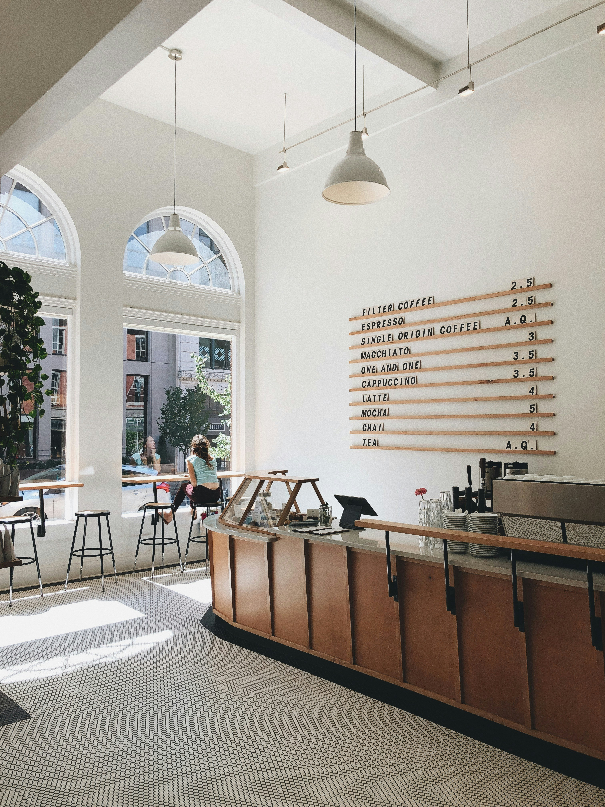

Sobre ORIGEN Café
En ORIGEN Café creemos que cada taza cuenta una historia. Nacimos con el propósito de acercar el café de especialidad a quienes disfrutan descubrir nuevos aromas y sabores.

Nuestra filosofía
Seleccionamos cuidadosamente nuestros granos y valoramos cada etapa del proceso, desde su origen hasta la taza.
Nuestros valores
- Calidad en cada preparación.
- Pasión por el café de especialidad.
- Respeto por el origen de nuestros granos.
- Atención cercana y personalizada.